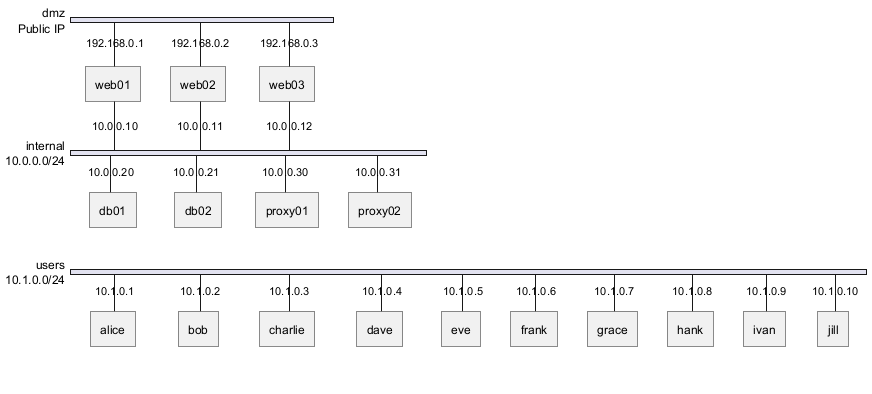

@startnwdiag
nwdiag {
network dmz {
address = "Public IP"
web01 [address = "192.168.0.1"];
web02 [address = "192.168.0.2"];
web03 [address = "192.168.0.3"];
}
network internal {
address = "10.0.0.0/24"
web01 [address = "10.0.0.10"];
web02 [address = "10.0.0.11"];
web03 [address = "10.0.0.12"];
db01 [address = "10.0.0.20"];
db02 [address = "10.0.0.21"];
proxy01 [address = "10.0.0.30"];
proxy02 [address = "10.0.0.31"];
}
network users {
address = "10.1.0.0/24"
alice [address = "10.1.0.1"];
bob [address = "10.1.0.2"];
charlie [address = "10.1.0.3"];
dave [address = "10.1.0.4"];
eve [address = "10.1.0.5"];
frank [address = "10.1.0.6"];
grace [address = "10.1.0.7"];
hank [address = "10.1.0.8"];
ivan [address = "10.1.0.9"];
jill [address = "10.1.0.10"];
}
}
@endnwdiag